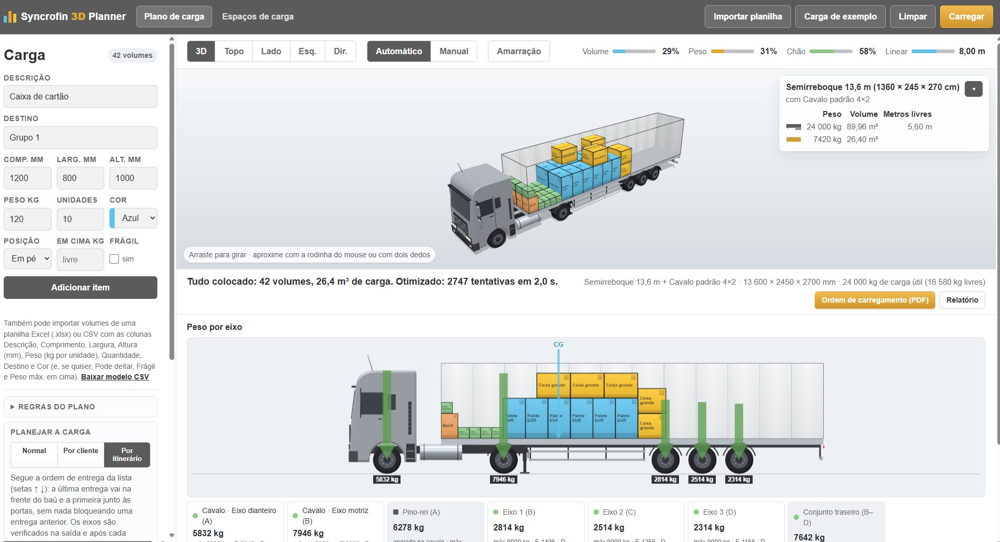
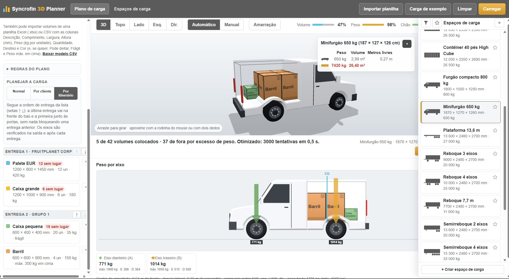
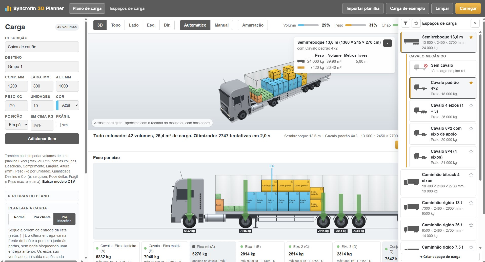
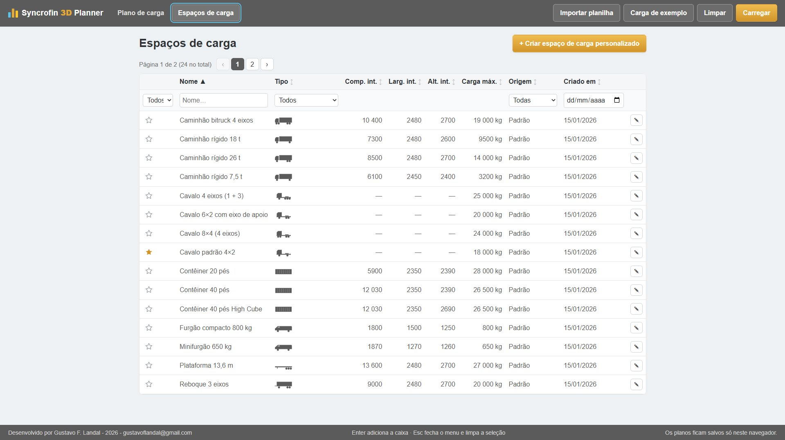
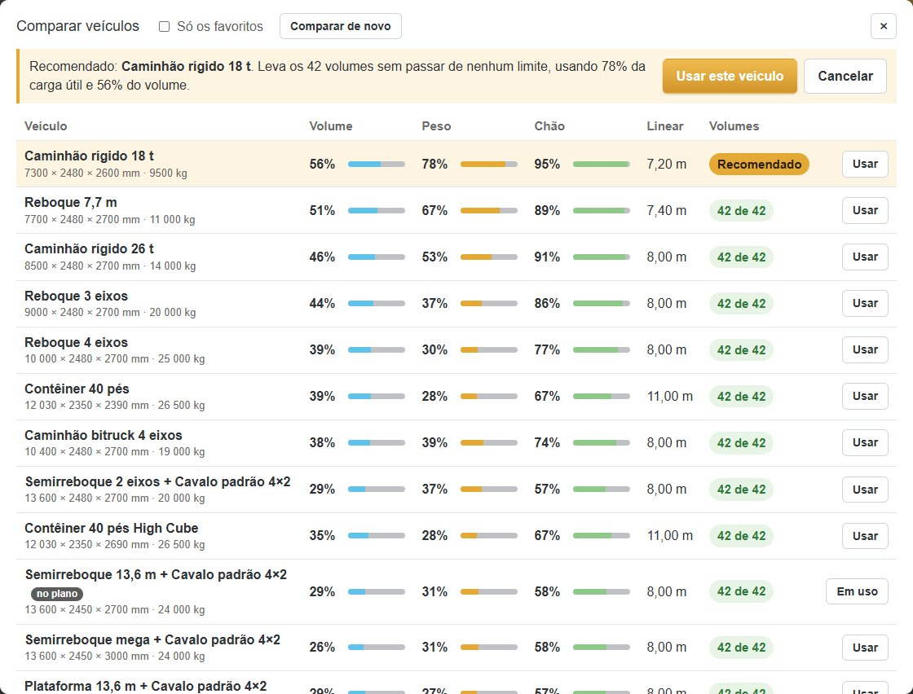
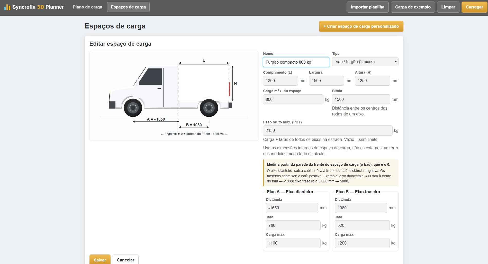
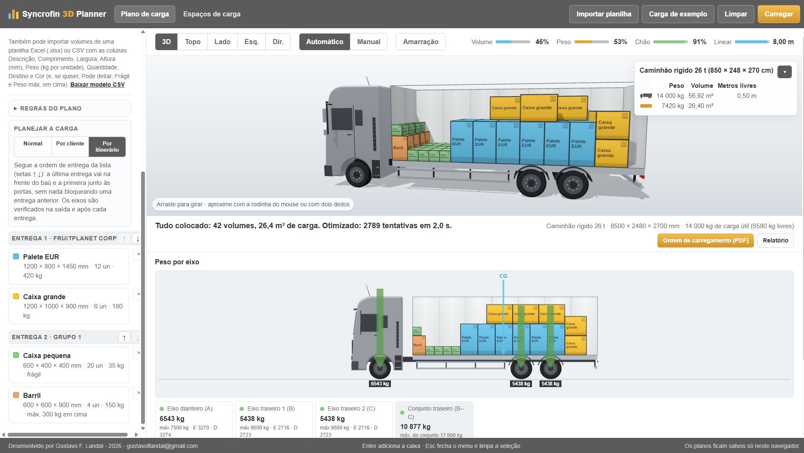
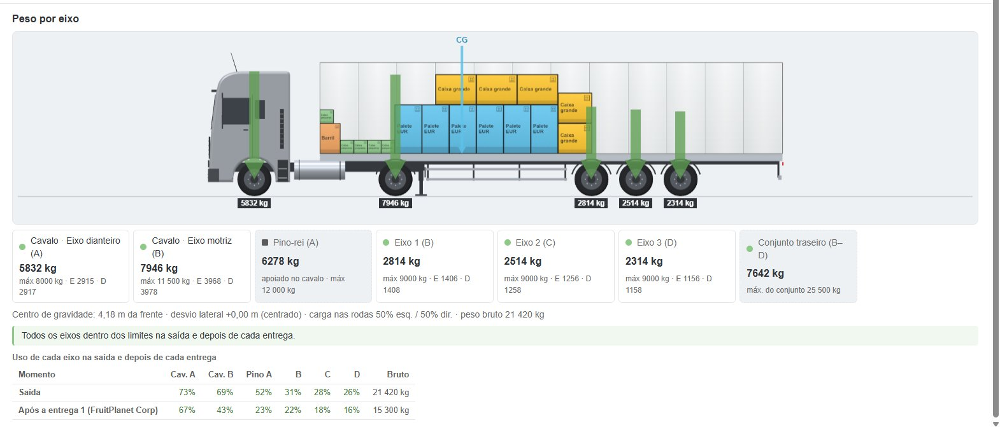
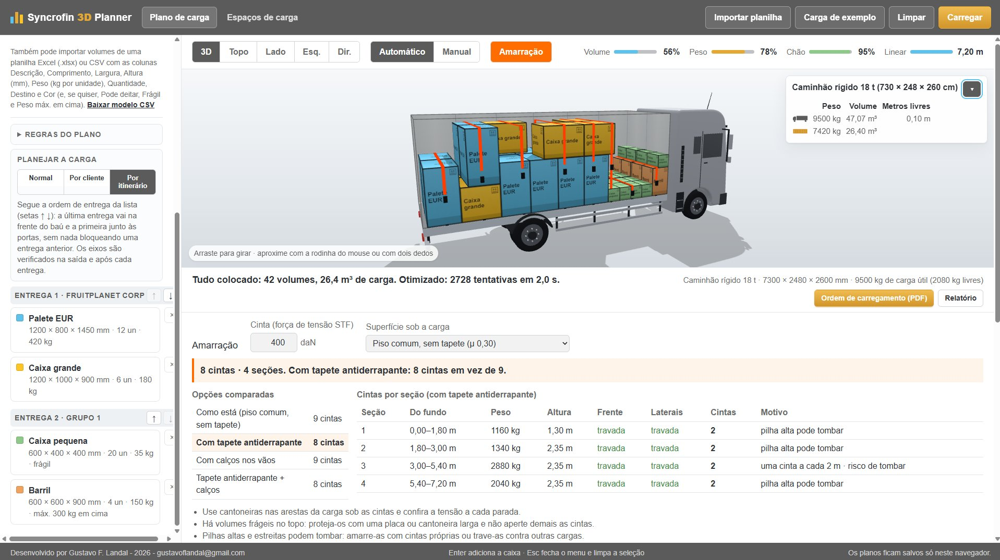
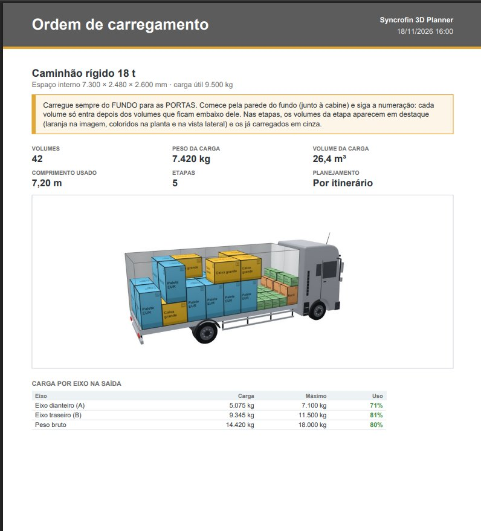

Manual do usuário
O Syncrofin 3D Planner monta o plano de carga de vans, caminhões, carretas e contêineres. Você informa os volumes e escolhe o veículo; o sistema posiciona a carga em 3D, confere o peso de cada eixo, calcula a amarração e gera a ordem de carregamento para a doca. Este manual explica cada tela, cada campo e cada cálculo.
Sumário
Nenhum capítulo contém esse termo. Tente outra palavra, como eixo, cinta, planilha ou PDF.
1Visão geral
O planejador resolve, em segundos, três perguntas que toda expedição faz antes de carregar:
Cabe?
Cada volume é posicionado no espaço de carga respeitando medidas, empilhamento, fragilidade e a ordem das entregas.
Está dentro do limite?
O peso de cada eixo, do pino-rei, dos conjuntos e o peso bruto são conferidos na saída e depois de cada entrega.
Como carregar e prender?
A ordem de carregamento em PDF numera os volumes do fundo para as portas, e o cálculo de amarração diz quantas cintas usar.
O que você precisa
- Um navegador atual (Chrome, Edge, Firefox ou Safari). Não é preciso instalar nada.
- Para a vista 3D, o ajuste manual e as imagens do PDF, o navegador precisa de WebGL, que os navegadores atuais já trazem. Sem WebGL, o sistema mostra um desenho 2D da carga.
- O sistema funciona com mouse, teclado ou tela de toque, no computador, no tablet ou no celular.
A lista de carga, o veículo escolhido, as regras, os espaços personalizados e os favoritos ficam salvos no próprio navegador deste computador. Nada é enviado para um servidor. Veja o capítulo Dados e privacidade.
2Primeiros passos
O jeito mais rápido de conhecer o sistema é seguir este roteiro com a carga de exemplo:
- Clique em Carga de exemplo na barra superior. A lista recebe 42 volumes de dois clientes e o plano aparece em 3D.
- Gire a vista arrastando com o mouse e aproxime com a rodinha. Experimente as vistas Topo, Lado, Esq. e Dir.
- Abra a lista de veículos pela seta ▾ do painel do espaço de carga (canto superior direito da vista) e escolha outro veículo. O plano é refeito na hora.
- Role até Peso por eixo e veja a carga em cada eixo, o centro de gravidade e a tabela de uso na saída e após cada entrega.
- Clique em Amarração para ver as cintas desenhadas sobre a carga e o quadro de cintas por seção.
- Clique em Ordem de carregamento (PDF) para gerar o documento da doca.
Carga de exemplo substitui a lista atual, e Limpar apaga todos os volumes da lista. Nenhum dos dois pede confirmação.
3A tela principal
A aba Plano de carga reúne tudo o que é preciso para montar e conferir um carregamento.

1 2 3 4 5 6 7- 1Barra superior. Abas Plano de carga e Espaços de carga, e os botões Importar planilha, Carga de exemplo, Limpar, Carregar e ? (este manual).
- 2Painel Carga. Formulário para adicionar volumes, regras do plano, modo de planejamento e a lista de carga.
- 3Barra da vista. Vistas (3D, Topo, Lado, Esq., Dir.), modo Automático/Manual, Amarração e os indicadores de ocupação.
- 4Vista da carga. O veículo e os volumes em 3D. Arraste para girar; use a rodinha ou dois dedos para aproximar.
- 5Painel do espaço. Veículo escolhido, medidas internas, capacidade e o que a carga pede. A seta ▾ abre a lista de veículos.
- 6Resumo do plano. Mensagem com o resultado, medidas do veículo e os botões Comparar veículos, Ordem de carregamento (PDF) e Relatório.
- 7Peso por eixo. Vista lateral com a carga em cada eixo, o centro de gravidade, os avisos e a tabela por entrega.
Botões da barra superior
| Botão | O que faz |
|---|---|
| Importar planilha | Lê um arquivo Excel (.xlsx) ou CSV e acrescenta os volumes à lista. Veja Importar planilha. |
| Carga de exemplo | Troca a lista atual por uma carga de demonstração com 42 volumes e dois clientes. |
| Limpar | Tira todos os volumes da lista. |
| Carregar | Refaz o plano com a lista atual. No modo Manual, encaixa os volumes que ficaram de fora sem mexer nos já posicionados. |
| ? | Abre este manual numa nova aba. Atalho: F1. |
No celular, os botões de ação ficam recolhidos no botão de menu (☰) ao lado da marca.
4Lista de carga
Cada linha da lista é um item: um tipo de volume com as suas medidas e a quantidade de unidades iguais. Preencha o formulário no painel Carga e clique em Adicionar item (ou tecle Enter).
Campos do formulário
| Campo | O que informar | Limites |
|---|---|---|
| Descrição | Nome do volume. É impresso na caixa em 3D e no PDF. | até 28 caracteres |
| Destino | Cliente ou parada de entrega. Volumes com o mesmo destino formam um grupo, usado nos modos Por cliente e Por itinerário. | até 40 caracteres |
| Comp. mm | Comprimento do volume, em milímetros. | 50 a 20.000 |
| Larg. mm | Largura do volume, em milímetros. | 50 a 3.000 |
| Alt. mm | Altura do volume, em milímetros. | 20 a 4.000 |
| Peso kg | Peso de uma unidade, em quilos. | 0 a 30.000 |
| Unidades | Quantas unidades iguais desse volume. | 1 a 500 |
| Cor | Cor da caixa na vista 3D, nos desenhos e no PDF. Ajuda a reconhecer o item. | 22 cores |
| Posição | Em pé: este lado para cima; o volume só gira no plano do chão. Deitar: qualquer face pode ficar para baixo. | em pé / deitar |
| Em cima kg | Peso máximo que o volume aguenta em cima, somado pela pilha inteira. Vazio = sem limite; 0 = não empilhar. | 0 a 100.000 |
| Frágil | Marcado, nada é colocado em cima desse volume. | sim / não |
Trabalhar com a lista
- Selecionar: clique num item para destacá-lo na vista. Clique de novo, ou tecle Esc, para tirar o destaque.
- Remover: clique no × à direita do item.
- Grupos: com mais de um destino, a lista aparece agrupada. No modo Por itinerário cada grupo vira "Entrega 1, 2…", com as setas ↑ e ↓ para mudar a ordem; no modo Por cliente, "Bloco 1 (frente), Bloco 2…".
- Sem lugar: quando um item mostra o selo vermelho "N sem lugar", N unidades não couberam. O resumo do plano diz o motivo: peso, eixo, regras ou falta de espaço.

O contador ao lado do título Carga mostra o total de volumes (soma das unidades de todos os itens).
5Importar planilha
O botão Importar planilha lê um arquivo Excel (.xlsx) ou CSV e acrescenta os volumes à lista atual. O link Baixar modelo CSV, abaixo do formulário, baixa um modelo pronto para preencher.
Colunas reconhecidas
As colunas são encontradas pelo cabeçalho, com ou sem acentos, em português ou inglês. Sem cabeçalho, o sistema espera exatamente esta ordem:
| Coluna | Conteúdo | Obrigatória |
|---|---|---|
| Descrição | Nome do volume | sim |
| Comprimento | Em mm (ou cm/m, se o cabeçalho disser) | sim |
| Largura | Em mm (ou cm/m) | sim |
| Altura | Em mm (ou cm/m) | sim |
| Peso | Em kg por unidade | sim |
| Quantidade | Número de unidades | sim |
| Destino | Cliente ou parada | não |
| Cor | Nome da cor | não |
| Pode deitar | Sim / Não | não |
| Frágil | Sim / Não | não |
| Peso máx. em cima (kg) | Vazio = sem limite; 0 = não empilhar | não |
Regras de leitura
- Unidades: as medidas são em milímetros, a menos que o cabeçalho diga
(cm)ou(m). Um cabeçalho "Peso total" é dividido pela quantidade. - CSV: aceita
;,,ou tabulação como separador, vírgula decimal, e arquivos em UTF-8 ou Windows-1252 (o formato que o Excel usa no Brasil). - Excel: só a primeira aba é lida. Arquivos
.xlsantigos não são aceitos: salve como.xlsxou.csv. - Cores: 22 cores (Azul, Amarelo, Verde, Laranja, Cinza, Vermelho, Rosa, Roxo, Lilás, Azul-escuro, Verde-água, Ciano, Verde-limão, Verde-escuro, Oliva, Marrom, Bege, Salmão, Dourado, Vinho, Grafite e Branco), também em inglês e com variações como "azul marinho", "turquesa", "bordô" e "preto". Linhas sem cor recebem as cores em sequência.
- Linhas inválidas (sem medidas, ou que não cabem no veículo escolhido) são ignoradas, e a mensagem informa o número de cada uma.
Descrição;Comprimento;Largura;Altura;Peso;Quantidade;Destino;Cor;FrágilPalete EUR;1200;800;1450;420;12;FruitPlanet Corp;Azul;NãoCaixa pequena;600;400;400;35;20;Grupo 1;Verde;Sim
6Espaços de carga
O espaço de carga é o veículo ou contêiner onde a carga é posicionada: baú, sider, plataforma, contêiner, van ou furgão. As medidas usadas são sempre as internas.
Escolher o veículo
- No painel do espaço (canto superior direito da vista), clique na seta ▾ para abrir a lista de espaços de carga.
- O botão de funil filtra por tipo (contêineres, vans e furgões, caminhões, reboques); a estrela mostra só os favoritos. Marque um favorito clicando na ★ do veículo.
- Ao escolher um semirreboque, aparece a lista de cavalos mecânicos. Com cavalo, a carga no pino-rei é repartida pelos eixos do cavalo; com Sem cavalo, só a carga no pino-rei é calculada.

Painel do espaço
Mostra o nome e as medidas internas do veículo. A primeira linha traz a capacidade (peso, volume e metros livres); a segunda, o que a lista de carga pede. O valor fica em vermelho quando a carga passa da capacidade.
Aba Espaços de carga
Tabela com todos os espaços de carga e cavalos, com filtros por favorito, nome, tipo, origem e data de criação, ordenação clicando no título da coluna e paginação.
- Os espaços padrão (24, do minifurgão ao contêiner 40 pés High Cube) podem ser editados e depois restaurados aos valores originais.
- Os espaços personalizados podem ser editados e apagados.

Comparar veículos e escolher o melhor
O botão Comparar veículos, ao lado de Ordem de carregamento (PDF), planeja a lista de carga atual em cada espaço de carga do catálogo, um depois do outro, e indica o mais adequado.
- Cada veículo recebe a mesma lista, no mesmo modo de planejamento e com as mesmas regras, numa busca curta (até 0,4 s por veículo). A barra de progresso mostra quantos já foram planejados.
- A tabela traz, para cada veículo, o volume, o peso e o chão ocupados, o metro linear e quantos volumes couberam. O veículo do plano aparece marcado no plano.
- Recomendado é o veículo que leva todos os volumes sem passar de nenhum limite de peso ou de eixo e, entre esses, o que usa a maior parte da carga útil ou do volume: o menor veículo que dá conta da carga. Veículos sem avisos de distribuição vêm antes dos que têm avisos.
- Os que não levam tudo vêm no fim da lista, com o número de volumes que couberam em vermelho.
- A comparação abre numa janela sobre o planejador, com duas saídas:
- o botão amarelo Usar este veículo troca o veículo e volta ao planejador já com o modelo sugerido (o Usar de cada linha faz o mesmo com aquele veículo);
- Cancelar volta ao planejador sem mudar nada, para o operador escolher. Esc, o × ou um clique fora da janela também cancelam.
- Marque Só os favoritos para comparar apenas os veículos marcados com ★, por exemplo a sua frota.
- Se a lista, o modo ou as regras mudarem, o painel avisa; clique em Comparar de novo.
- Os semirreboques são comparados com o cavalo mecânico escolhido no plano.

A comparação usa uma busca curta para ser rápida. Depois de escolher o veículo, o plano principal faz a busca completa e pode encontrar um arranjo ainda melhor.
Cadastrar a sua frota
Clique em + Criar espaço de carga personalizado (na aba) ou + Criar espaço de carga (no fim da lista lateral) e preencha:
| Campo | Descrição |
|---|---|
| Nome | Como o veículo aparece nas listas e no PDF. |
| Tipo | 19 tipos, entre eles van/furgão, caminhão rígido, bitruck de 4 eixos, reboques de 3 e 4 eixos, semirreboques, plataforma, contêiner e cavalos mecânicos (inclusive 4 eixos em 2 + 2 e 1 + 3). O tipo define quantos eixos o veículo tem. |
| Comprimento, largura, altura | Medidas internas do espaço de carga, em mm. |
| Carga máx. do espaço | Carga útil máxima, em kg. |
| Bitola | Distância entre os centros das rodas de um eixo, em mm. Usada para repartir o peso entre rodas esquerdas e direitas. |
| Peso bruto máx. (PBT) | Opcional. Carga mais as taras de todos os eixos. No semirreboque vale como PBTC da combinação; no cavalo, como CMT/PBTC. Vazio = sem limite. |
| Eixos A a E | Para cada eixo: distância, tara e carga máxima. |
| Limites dos conjuntos | Opcionais: carga máxima do conjunto dianteiro e do traseiro (quando têm mais de um eixo) e a repartição de cada eixo no conjunto, em %. Vazio = partes iguais; preenchida, precisa somar 100%. |
- O 0 é a parede da frente do espaço de carga (o baú). Nos cavalos mecânicos, o 0 é o prato.
- Eixos à frente do baú têm distância negativa. Exemplo: eixo dianteiro 1.300 mm à frente do baú =
-1300; eixo traseiro 5.000 mm atrás da parede da frente =5000. - Um erro nas medidas muda todo o cálculo de eixos. Confira com o documento do veículo.

No bitruck e no cavalo 8×4 (2 + 2), os eixos A e B formam o par dianteiro direcional, que divide a carga como o grupo traseiro. No cavalo 1 + 3, B, C e D formam o grupo traseiro. O catálogo já traz os limites usuais: conjunto duplo 17.000 kg, triplo 25.500 kg e o PBT dos caminhões rígidos.
As medidas, taras e limites das vans e furgões do catálogo são típicos da categoria. Confira com o documento do seu veículo e ajuste no cadastro.
7Como o plano é montado
No modo Automático, o plano é refeito sempre que a lista, o veículo ou as regras mudam. O trabalho tem três partes.
1. Arranjo
Cada volume vai para a posição mais à frente, mais baixa e que deixa a carga mais equilibrada entre esquerda e direita. Os cantos do fundo também são testados, para quando os eixos pedem a carga mais para trás. Em cada posição, o sistema confere:
- o volume cabe e não sobrepõe outro;
- a base tem o apoio mínimo (padrão 80%);
- as rotações são permitidas: em pé só gira no plano do chão; deitar permite as 6 posições;
- nada vai em cima de volume frágil;
- o peso máximo em cima de cada volume, somado pela pilha inteira;
- a ordem de descarga: um volume não fica entre outro que sai antes e as portas, nem em cima dele;
- o peso por eixo: nenhum eixo, conjunto, prato ou o peso bruto passa do limite.
2. Verificação
O peso em cada apoio é calculado pelo equilíbrio de momentos a partir do centro de gravidade de cada volume, na saída e de novo depois de cada entrega. O sistema avisa sobre limites (eixo, conjunto, pino-rei, peso bruto e eixo que levanta) e sobre a distribuição (desbalanceamento lateral, pouca carga no eixo dianteiro ou no de tração).
3. Busca do melhor plano
- O primeiro plano aparece na hora.
- Em seguida, o sistema refaz a montagem com ordens de volumes sorteadas, dentro do tempo de otimização (padrão 2 s, até 3.000 tentativas), e fica com o plano de melhor pontuação: mais volume carregado, menos excesso nos eixos e menos avisos.
- A mesma lista sempre dá o mesmo plano.
- Qualquer edição interrompe a busca e começa outra.
- Se ainda sobrar um problema de eixo, a carga inteira pode recuar no baú; sem problema, ela fica encostada na parede da frente.
A mensagem do resumo mostra o resultado, por exemplo: "Tudo colocado: 42 volumes, 26,4 m³ de carga. Otimizado: 2747 tentativas em 2,0 s."
8Modos de planejamento
Em Planejar a carga, no painel à esquerda, você escolhe como o destino de cada volume entra no plano. O modo fica salvo com o plano.
Normal
O destino é ignorado. Todos os volumes se misturam em busca do melhor aproveitamento de espaço e peso. Eixos verificados na saída.
Por cliente
A carga de cada cliente forma um bloco, sem volume de outro cliente na frente (do lado das portas) nem em cima. O sistema testa várias ordens de blocos e escolhe a melhor. Eixos verificados na saída.
Por itinerário (padrão)
Segue a ordem das entregas: a última entrega é carregada primeiro e vai para a frente. Eixos verificados na saída e depois de cada entrega.
Ordem das entregas
No modo Por itinerário, os destinos da lista são as paradas, na ordem mostrada ("Entrega 1, 2…"). Use ↑ (entregar antes) e ↓ (entregar depois) no título de cada grupo para mudar a ordem. Ao empurrar volumes para trás por causa dos eixos, o sistema reserva no fundo o comprimento de que as entregas anteriores precisam.

9Regras do plano
Clique em Regras do plano, no painel à esquerda, para ajustar os critérios que valem para toda a carga:
| Regra | Padrão | Faixa | Significado |
|---|---|---|---|
| Apoio mínimo da base | 80% | 50 a 100% | Quanto da base de um volume precisa estar apoiada no piso ou em outros volumes. |
| Desbalanceamento lateral máx. | 10% | 1 a 50% | Conta a partir de 50/50: 10% permite até 60% do peso de um lado. |
| Carga mín. no eixo dianteiro | 20% | 0 a 60% | Parte do peso do caminhão (ou do cavalo) que precisa ficar sobre os eixos da frente, para a direção não ficar leve. |
| Carga mín. no eixo de tração | 20% | 0 a 60% | Parte do peso bruto total sobre o eixo de tração, para manter a aderência. |
| Tempo de otimização | 2 s | 0 a 30 s | Quanto tempo o sistema procura planos melhores. Mais tempo pode achar planos melhores em cargas grandes. |
As regras de cada volume (posição, peso máximo em cima e frágil) ficam no formulário do item. Veja Lista de carga.
10Vistas e indicadores
Vistas
| Botão | Mostra |
|---|---|
| 3D | O veículo e a carga em perspectiva. Arraste para girar; rodinha do mouse ou dois dedos para aproximar. |
| Topo | A planta: a carga vista de cima. |
| Lado | A carga vista de lado, como no corte lateral do baú. |
| Esq. / Dir. | As laterais esquerda e direita do veículo. |
Na vista 3D, as caixas trazem o nome do item impresso e o símbolo "este lado para cima". O veículo é montado com os dados do espaço de carga: rodas nas posições dos eixos e na bitola, cabine, cavalo com prato, pés de apoio do semirreboque e cambão do reboque.
Indicadores de ocupação
| Indicador | O que mede |
|---|---|
| Volume | Quanto do volume interno do espaço de carga está ocupado pela carga colocada. |
| Peso | Quanto da carga máxima do espaço está sendo usado. |
| Chão | Quanto da área do piso está coberto por volumes. |
| Linear | Comprimento do piso ocupado, em metros (metro linear). |
Peso perto de 100% com volume baixo indica carga densa: o limite é o peso. Chão alto com volume baixo indica carga que não empilha. Para ver os indicadores de todos os veículos de uma vez, use Comparar veículos.
11Ajuste manual
O otimizador sugere o plano, mas o operador pode ajustá-lo. Os botões Automático e Manual ficam na barra da vista.
- Automático (padrão): o planejador arruma a carga e busca planos melhores a cada mudança.
- Manual: o plano fica como está e o operador move os volumes.
Mover com o mouse ou o dedo
- Arraste um volume na vista 3D. Uma prévia verde mostra onde ele vai ficar; vermelha quando não cabe (passaria do teto).
- Ao soltar, o volume desliza no piso, encosta numa parede ou num volume vizinho quando chega a menos de 6 cm, e assenta pela gravidade, no piso ou sobre os volumes embaixo. O que estava em cima dele desce.
- Arrastar o fundo, fora dos volumes, continua girando a vista.
Mover pelo teclado
| Tecla | Ação |
|---|---|
| Clique no volume | Seleciona o volume (contorno âmbar). |
| ← → ↑ ↓ | Move o volume selecionado 100 mm. |
| Shift + setas | Move 10 mm, para o ajuste fino. |
| R | Gira o volume 90°. |
| Esc | Tira a seleção. |
O que o sistema continua conferindo
- Posições feitas à mão nunca deixam volumes sobrepostos ou fora do baú.
- Os eixos são recalculados a cada movimento.
- O que quebra uma regra do plano é mostrado como aviso, e não recusado: base pouco apoiada, carga sobre um frágil, peso acima do limite "em cima", volume no caminho de uma entrega anterior ou misturado com o bloco de outro cliente. A decisão fica com o operador.
Lista no modo manual
Ao acrescentar ou tirar itens, trocar o veículo ou as regras, os volumes já posicionados ficam onde estão e os que faltam são encaixados no espaço livre em volta deles. Carregar faz o mesmo com os volumes que ficaram de fora.
Clicar em Automático refaz o plano e descarta os ajustes manuais. Se houve ajustes, o sistema pede confirmação. O modo e as posições manuais ficam salvos com o plano. O ajuste manual precisa da vista 3D (WebGL).
12Peso por eixo
O painel Peso por eixo, abaixo da vista, mostra o veículo de lado com a carga à vista. Para veículos sem eixos próprios, como o contêiner, ele explica que é preciso escolher um caminhão, reboque ou semirreboque.

Como ler o diagrama
- Uma seta grande desce sobre cada eixo. O comprimento é a fração do limite usada; a cor é o estado: verde (folgado), amarelo (perto do limite) ou vermelho (acima do limite).
- A carga em kg aparece sob cada roda. Em telas estreitas, os valores passam a toneladas.
- A seta azul fina marca o centro de gravidade (CG) da carga.
Cartões e tabela
- Cada eixo mostra a carga mais a tara, a carga máxima e a divisão entre rodas esquerdas (E) e direitas (D), calculada pela bitola e pelo desvio lateral do centro de gravidade.
- Os conjuntos de eixos aparecem com a sua carga e o seu limite. No semirreboque com cavalo, o pino-rei aparece apoiado no cavalo.
- A linha de baixo traz o centro de gravidade, o desvio lateral, a divisão esquerda/direita e o peso bruto.
- No modo Por itinerário, a tabela Uso de cada eixo na saída e depois de cada entrega mostra o percentual de cada eixo em cada momento da viagem. Um eixo pode ficar acima do limite depois de uma entrega, mesmo estando bem na saída.
A lista de problemas abaixo do diagrama explica o que passou do limite e em que momento. Tente outro veículo, mude a ordem das entregas, reduza a carga ou, no modo Manual, desloque volumes pesados na direção do eixo com folga.
13Amarração
O botão Amarração, na barra da vista, calcula as cintas que a carga planejada precisa, desenha as cintas em 3D sobre a carga e abre o painel de amarração. Cada cinta, em laranja, sai de um ponto de amarração no piso, passa pelas quinas superiores dos volumes, como uma cinta esticada, e desce até o piso do outro lado, onde fica a catraca. Com ele ligado, a ordem de carregamento em PDF ganha a página Plano de amarração.

Campos do painel
| Campo | Descrição |
|---|---|
| Cinta (STF) | Força de tensão da cinta, em daN, como está na etiqueta. Padrão 400 daN; faixa de 100 a 2.000 daN. |
| Superfície sob a carga | Coeficiente de atrito (μ) entre a carga e o piso, de 0,20 a 0,60. O tapete antiderrapante chega a μ 0,60. |
O que o painel mostra
- Recomendação: total de cintas e de seções, e a opção com menos cintas.
- Opções comparadas: "como está", "com tapete antiderrapante", "com calços nos vãos" (vãos de até 40 cm ao longo do baú e 30 cm de folga lateral) e "tapete + calços".
- Cintas por seção: posição a partir do fundo, peso, altura, se a frente e as laterais estão travadas, número de cintas e o motivo.
- Avisos: usar cantoneiras nas arestas, volumes frágeis no topo, pilhas altas que podem tombar, alturas diferentes sob a mesma cinta (as pilhas mais baixas não ficam presas) e parede frontal sobrecarregada.
Método de cálculo
Amarração por atrito, com a cinta passando por cima da carga, conforme a norma EN 12195-1: acelerações de projeto de 0,8 g para a frente e 0,5 g para trás e para os lados, com fator de segurança 1,1. A carga é dividida em seções transversais de até cerca de 2,5 m, cortadas entre volumes, com pelo menos uma cinta a cada 2 m.
- A parede frontal segura a carga encostada nela (ou encostada em carga que a toca) até 40% da carga útil, com máximo de 5.000 daN no baú (EN 12642 L); no contêiner, 40% da carga útil.
- As paredes laterais seguram a carga que ocupa a largura toda.
- Portas traseiras e plataformas não travam a carga.
O cálculo é uma ajuda de planejamento. Confira sempre com a Resolução CONTRAN nº 552/2015 e com a etiqueta das cintas, e verifique a tensão a cada parada.
14Ordem de carregamento e relatório
Ordem de carregamento (PDF)
O botão Ordem de carregamento (PDF) gera, no próprio navegador, o documento para quem carrega o veículo e o abre numa nova aba, pronto para imprimir ou salvar. Se o navegador bloquear a nova aba, o arquivo é baixado.

- Sequência: sempre do fundo (a parede junto à cabine) para as portas. Um volume só entra depois dos volumes que ficam embaixo dele; entre os liberados, vai primeiro o mais ao fundo, depois o mais baixo, depois o da esquerda. A sequência é dividida em etapas de cerca de 1,25 m do comprimento, com até 12 volumes por etapa.
- Capa: veículo, data, a regra de carregamento, totais (volumes, peso, m³, comprimento usado, etapas e modo de planejamento), imagem 3D da carga completa, carga por eixo na saída e os avisos do plano, inclusive volumes que ficaram de fora.
- Cada etapa: imagem 3D vista das portas, com os volumes da etapa em laranja; planta e vista lateral em escala, com os já carregados em cinza e os da etapa coloridos e numerados; tabela com número, volume, cliente, medidas, peso, distância do fundo, altura, lado (esquerdo, centro, direito) e observações (girado, deitado, frágil, não empilhar).
- Amarração: com a amarração ligada, o documento inclui a página Plano de amarração.
- Fechamento: campos de assinatura para o responsável pelo carregamento e para o conferente. Todas as páginas trazem "Página X de N".
Sem WebGL, o documento sai sem as imagens 3D, mas com as plantas, as vistas laterais e as tabelas.
Relatório
O botão Relatório abre a impressão do navegador com o plano atual, sem os botões e formulários da tela. Para gerar um arquivo, escolha Salvar como PDF na janela de impressão.
15Atalhos de teclado
| Tecla | Onde | Ação |
|---|---|---|
| F1 | Qualquer tela | Abre este manual numa nova aba. |
| Enter | Formulário da carga | Adiciona o item à lista. |
| Esc | Qualquer tela | Fecha o menu (no celular) e tira a seleção. |
| ← → ↑ ↓ | Modo Manual, volume selecionado | Move o volume 100 mm. |
| Shift + setas | Modo Manual, volume selecionado | Move o volume 10 mm. |
| R | Modo Manual, volume selecionado | Gira o volume 90°. |
16Dados e privacidade
- O plano (lista, veículo, regras, modo, posições manuais e amarração), os espaços personalizados, as edições e os favoritos ficam salvos no armazenamento local do navegador, neste computador.
- Nenhum dado é enviado para um servidor: o cálculo, o PDF e a leitura das planilhas acontecem no próprio navegador.
- Outro navegador, outro computador ou uma janela anônima não enxergam os seus planos.
- Limpar os dados de navegação (cookies e dados de sites) apaga os planos e os espaços personalizados.
Guarde a planilha de cada carga e o PDF da ordem de carregamento. Com a planilha, o plano pode ser refeito em qualquer computador, e a mesma lista sempre gera o mesmo plano.
17Perguntas frequentes
A vista 3D não aparece, só um desenho plano.
O navegador está sem WebGL, ou a página foi aberta direto do disco (endereço começando com file://). Abra o sistema pelo endereço do servidor e confira se a aceleração de hardware está ligada nas configurações do navegador.
Alguns volumes ficaram "sem lugar". O que fazer?
Leia o motivo no resumo do plano: peso, eixo, regras ou falta de espaço. Então escolha um veículo maior, aumente o tempo de otimização, permita que volumes deitem, revise o "Em cima kg" e o "Frágil", ou divida a carga em duas viagens.
Qual veículo devo usar para esta carga?
Clique em Comparar veículos. O sistema planeja a carga em todos os espaços de carga e recomenda o menor que leva todos os volumes dentro dos limites de peso e de eixo.
Um eixo ficou vermelho, mas o peso total está abaixo da capacidade.
A capacidade total não garante a distribuição. Volumes pesados concentrados na frente ou atrás sobrecarregam um eixo. No modo Automático o sistema já tenta corrigir; se não conseguir, mude a ordem das entregas, troque o veículo ou ajuste à mão no modo Manual.
O PDF não abriu.
O navegador bloqueou a nova aba. Nesse caso o arquivo é baixado: procure na pasta de downloads, ou permita pop-ups para o endereço do sistema.
A planilha não foi lida.
Confira se o arquivo é .xlsx ou .csv (o .xls antigo não é aceito), se os dados estão na primeira aba e se há colunas de comprimento, largura, altura, peso e quantidade. A mensagem informa o número das linhas ignoradas.
Por que o plano não muda quando clico em Carregar de novo?
A mesma lista sempre gera o mesmo plano. Para buscar alternativas, aumente o tempo de otimização em Regras do plano, ou ajuste à mão no modo Manual.
Meus planos sumiram.
Os planos ficam no navegador. Se os dados de navegação foram limpos, ou se você está em outro navegador, computador ou janela anônima, o plano não aparece. Importe a planilha da carga de novo.
As medidas do meu veículo são diferentes das do catálogo.
Edite o espaço na aba Espaços de carga (é possível restaurar o original depois) ou crie um espaço personalizado com as medidas internas, os eixos e os limites do documento do veículo.
18Glossário
- Bitola
- Distância entre os centros das rodas de um mesmo eixo.
- Cantoneira
- Proteção colocada na aresta da carga sob a cinta, para não marcar o volume nem cortar a cinta.
- Centro de gravidade (CG)
- Ponto onde se concentra o peso da carga. A posição dele define quanto peso vai para cada eixo.
- CMT
- Capacidade máxima de tração do cavalo mecânico.
- Conjunto de eixos
- Eixos próximos que dividem a carga entre si, como o conjunto duplo (tandem) ou o triplo.
- daN
- Decanewton, unidade de força das cintas. 1 daN equivale a cerca de 1 kgf.
- Metro linear
- Comprimento do piso ocupado pela carga, a partir da parede da frente.
- Pino-rei
- Pino do semirreboque que engata no prato do cavalo e transmite a ele parte do peso.
- Prato (quinta roda)
- Peça do cavalo mecânico onde o pino-rei do semirreboque se apoia.
- PBT
- Peso bruto total: a tara do veículo mais a carga.
- PBTC
- Peso bruto total combinado: cavalo mais semirreboque e carga.
- STF
- Força de tensão padrão da cinta com a catraca (standard tension force), em daN, informada na etiqueta.
- Tara
- Peso do veículo vazio sobre cada eixo.
- μ (coeficiente de atrito)
- Mede o quanto a carga escorrega no piso. Quanto maior, menos cintas são necessárias.
19Suporte
Dúvidas, sugestões ou problemas: escreva para gustavoflandal@gmail.com. Para agilizar, descreva o que estava fazendo, o veículo escolhido e, se possível, anexe a planilha da carga e o PDF da ordem de carregamento.
Syncrofin 3D Planner, desenvolvido por Gustavo F. Landal, 2026.
Voltar ao início do manual